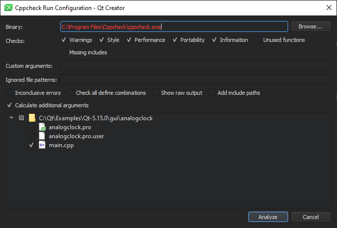

Detect errors in C++ code with Cppcheck
Enable the experimental Cppcheck plugin to view diagnostics that are generated by the Cppcheck tool in the C++ editor.
Cppcheck is automatically run on open files. To select the files to check in the currently active project, go to Analyze > Cppcheck.
Analyze selected files
- Go to Analyze > Cppcheck.

- In uicontrol Binary, enter the path to the Cppcheck executable file.
- In Checks, select the checks to perform.
Note: By default, Cppcheck uses multiple threads to perform checks. Select Unused functions to turn off the default behavior.
- In Custom arguments, enter additional arguments for running Cppcheck. The arguments might be shadowed by automatically generated ones. To avoid possible conflicts in configuration, select Show raw output and check the final arguments.
- In Ignored file patterns, enter a filter for ignoring files that match the pattern (wildcard). You can enter multiple patterns separated by commas. Even though Cppcheck is not run on files that match the patterns, they might be implicitly checked if other files include them.
- Select Inconclusive errors to also mark possible false positives.
- Select Check all define combinations to check all define combinations. This can significantly slow down analysis, but might help to find more issues.
- Select Add include paths to pass the current project's include paths to Cppcheck. This slows down checks on big projects, but can help Cppcheck to find missing includes.
- Select Calculate additional arguments to calculate additional arguments based on current project's settings (such as the language used and standard version) and pass them to Cppcheck.
- Select the files to run Cppcheck on.
- Select Analyze.
Qt Creator runs Cppcheck on the selected files and displays results via text marks or annotations.
To specify the settings above for the automatically run checks, go to Preferences > Analyzer > Cppcheck.
See also Enable and disable plugins, How To: Analyze, Analyzing Code, and Analyzers.